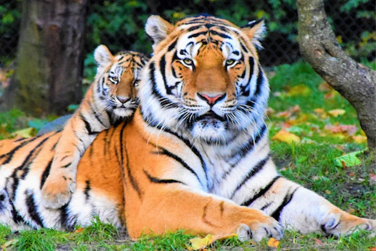

The tiger is the largest living cat species and a member of the genus Panthera. It is most recognizable for its dark vertical stripes on orange-brown fur with a lighter underside. As an apex predator, it primarily preys on large animals such as deer and wild boar. Tigers are territorial and generally solitary but social animals, often requiring large contiguous areas of habitat to support their prey demands. Sadly, tigers are an endangered species, with the primary threats being habitat destruction, habitat fragmentation, and poaching.
